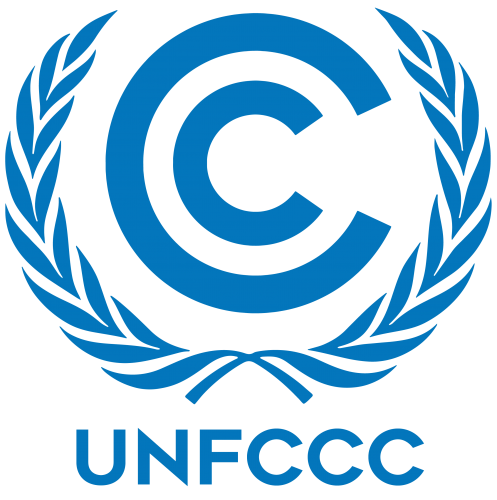
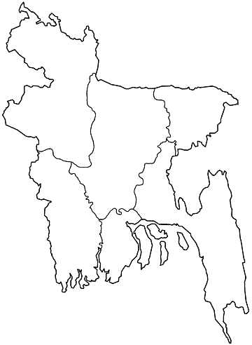

A FACTSHEET ON

UNFCCC in Bangladesh
A country that adds little to global warming but suffers badly · It turns a global climate treaty into national action and speaks up in the world climate talks.
of the world’s greenhouse-gas emissions come from Bangladesh (UNDP, 2026)
most at risk from climate change in the Global Climate Risk Index 2026 (TBS Report, 2026)
lower emissions by 2035 than doing nothing, if every promise is kept (GoB, 2025)
needed to deliver the 2025 climate pledge, 2026–2035 (GoB, 2025)
01The Convention In Brief
The UNFCCC is a global climate treaty agreed in 1992 and now joined by almost every country. Its aim is to stop greenhouse gases building up to a level that harms the climate (United Nations, 1992).
Later deals, the Kyoto Protocol 2005 and the Paris Agreement 2016, ask each country to make its own climate pledge, called a Nationally Determined Contribution (NDC) and to renew it regularly.
Why it matters here: Bangladesh causes only about 0.5% of global emissions, yet it faces cyclones, floods, salty water and rising seas, up 3.8–5.8 mm a year on the coast (Government of Bangladesh [GoB], 2025).
- Signed 1992
- Ratified 1994
- Kyoto 2001
- Paris 2016
Bangladesh is a developing country that is not asked to cut emissions first (a “Non-Annex I” Party) and is on the UN’s Least Developed Countries list (UNFCCC, 2026; FE Online Desk, 2026).

★Dhaka- Cyclones and storm surges hit the coast
- Rising seas and salty water creep inland
- Monsoon floods cover large areas
- Riverbanks wash away, taking homes
02From Treaty To National Policy
- 1994Bangladesh formally joins the UNFCCC (UNFCCC, 1995)
- 2009A national strategy sets six priority areas (Ministry of Environment and Forests [MoEF], 2009)
- 2010A law creates a national climate fund (GoB, 2010)
- 2016Bangladesh joins the Paris Agreement (UNFCCC, 2026)
- 2023A National Adaptation Plan to 2050 is sent to the UN (UNDP, 2026)
- 2025A new 2035 pledge, “NDC 3.0”, is submitted (GoB, 2025)
WHO IS RESPONSIBLE?
Leads the country’s climate pledges and long-term plans (TBS Report, 2026).
Checks project ideas, releases money and tracks results (Kamruzzaman, 2015).
Run most funded projects: 218 of 281 by mid-2014 (Kamruzzaman, 2015).
PKSF, a government-owned foundation, oversees NGO projects (Kamruzzaman, 2015).
03How Bangladesh Shapes The Climate Talks
Chaired the Least Developed Countries group in 2004–06 and helped win a fund for their adaptation plans (Ayers & Huq, 2009).
Chaired this alliance of at-risk countries twice, most recently until 2022 (Khan, 2024).
Pushed for a fund to help after climate harm that cannot be avoided. It launched at COP28 in 2023 (Khan, 2024).
Chosen for key climate-fund boards (Huq, 2016) and spoke for all poorer countries on finance in 2025 (Least Developed Countries [LDC] Group, 2025).